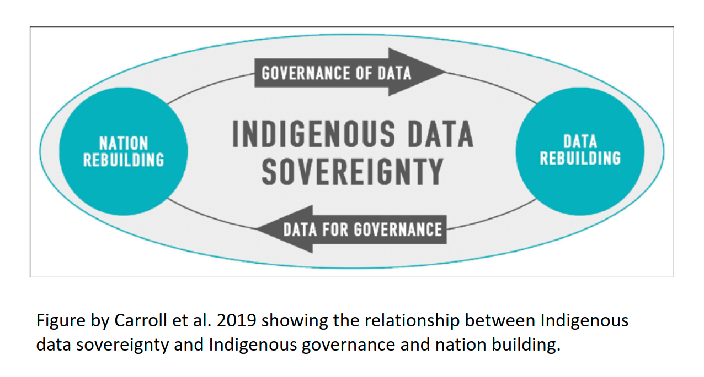
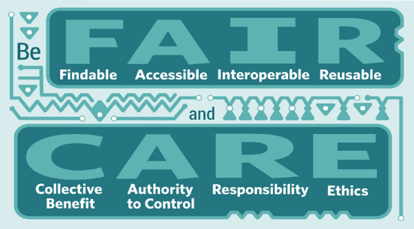

11.1 Introduction
This part of the course was developed with input from ELOKA and the NNA-CO, and is a work-in-progress. The training introduces ethics issues in a broad way and includes discussion of social science data and open science, but the majority of the section focuses on issues related to research with, by, and for Indigenous communities. We recognize that there is a need for more in-depth training and focus on open science for social scientists and others who are not engaging with Indigenous Knowledge holders and Indigenous communities, and hope to develop further resources in this area in the future. Many of the data stewardship practices that have been identified as good practices through Indigenous Data Sovereignty framework development are also relevant for those working with Arctic communities that are not Indigenous, although the rights frameworks and collective ownership is specific to the Indigenous context.
The examples we include in this training are primarily drawn from the North American research context. In future trainings, we plan to expand and include examples from other Indigenous Arctic contexts. We welcome suggestions and resources that would strengthen this training for audiences outside of North America.
We also recognize the importance of trainings on Indigenous data sovereignty and ethics that are being developed and facilitated by Indigenous organizations and facilitators. In this training we offer some introductory material but there is much more depth offered in IDS specific trainings.
11.2 Introduction to ELOKA
The Exchange for Local Observations and Knowledge of the Arctic is an NSF funded project. ELOKA partners with Indigenous communities in the Arctic to create online products that facilitate the collection, preservation, exchange, and use of local observations and Indigenous Knowledge of the Arctic. ELOKA fosters collaboration between resident Arctic experts and visiting researchers, provides data management and user support, and develops digital tools for Indigenous Knowledge in collaboration with our partners. By working together, Arctic residents and researchers can make significant contributions to a deeper understanding of the Arctic and the social and environmental changes ongoing in the region.
Arctic residents and Indigenous peoples have been increasingly involved in, and taking control of, research. Through Local and Indigenous Knowledge and community-based monitoring, Arctic communities have made, and continue to make, significant contributions to understanding recent Arctic change. In ELOKA’s work, we subscribe to ideas of information and data sovereignty, in that we want our projects to be community-driven with communities having control over how their data, information, and knowledge are shared in an ethical manner.
A key challenge of Local and Indigenous Knowledge research and community-based monitoring to date is having an effective and appropriate means of recording, storing, representing, and managing data and information in an ethical manner. Another challenge is to find an effective means of making such data and information available to Arctic residents and researchers, as well as other interested groups such as teachers, students, and decision-makers. Without a network and data management system to support Indigenous Knowledge and community-based research, a number of problems have arisen, such as misplacement or loss of extremely precious data, information, and stories from Elders who have passed away, a lack of awareness of previous studies causing repetition of research and wasted resources occurring in the same communities, and a reluctance or inability to initiate or maintain community-based research without an available data management system. Thus, there is an urgent need for effective and appropriate means of recording, preserving, and sharing the information collected in Arctic communities. ELOKA aims to fill this gap by partnering with Indigenous communities to ensure their knowledge and data are stored in an ethical way, thus ensuring sovereignty over these valuable sources of information.
ELOKA’s overarching philosophy is that Local and Indigenous Knowledge and scientific expertise are complementary and reinforcing ways of understanding the Arctic system. Collecting, documenting, preserving, and sharing knowledge is a cooperative endeavor, and ELOKA is dedicated to fostering that shared knowledge between Arctic residents, scientists, educators, policy makers, and the general public. ELOKA operates on the principle that all knowledge should be treated ethically, and intellectual property rights should be respected.
ELOKA is a service available for research projects, communities, organizations, schools, and individuals who need help storing, protecting, and sharing Local and Indigenous Knowledge. ELOKA works with many different types of data and information, including:
Written interview transcripts
Audio or video tapes and files
Photographs, artwork, illustrations, and maps
Digital geographic information such as GPS tracks, and data created using Geographic Information Systems
Quantitative data such as temperature, snow thickness, wind data, etc.
Many other types of Indigenous Knowledge and local observations, including place names
ELOKA collaborates with other organizations engaged in addressing data management issues for community-based research. Together, we are working to build a community that facilitates international knowledge exchange, development of resources, and collaboration focused on local communities and stewardship of their data, information, and knowledge.
11.3 Working With Arctic Communities
Arctic communities (defined as a place and the people who live there, based on geographic location in the Arctic/sub-Arctic) are involved in research in diverse ways - as hosts to visiting or non-local researchers, as well as “home” to community researchers who are leading or collaborating on research projects. Over the past decades, community voices of discontent with standard research practices that are often exclusive and perpetuate inequities have grown stronger. The Arctic research community (defined more broadly as the range of institutions, organizations, researchers and local communities involved in research) is in the midst of a complex conversation about equity in research aimed at transforming research practice to make it more equitable and inclusive.
One of the drivers of community concerns is the colonial practice of extracting knowledge from a place or group of people without respect for local norms of relationship with people and place, and without an ethical commitment to sharing and making benefits of knowledge accessible and accountable to that place. Such approaches to knowledge and data extraction follow hundreds of years of exploration and research that viewed science as a tool of “Enlightenment” yet focused exclusively on benefits to White, European (or “southern” from an Arctic community perspective) researchers and scientists. This prioritization of non-local perspectives and needs (to Arctic communities) continues in Arctic research.
One result of this approach to research has been a lack of access for Arctic residents to the data and knowledge that have resulted from research conducted in their own communities. Much of this data was stored in the personal files or hard drives of researchers, or in archives located in urban centers far from the Arctic.
11.4 Indigenous Data Governance and Sovereignty

All governing entities, whether national, state, local, or tribal, need access to good, current, relevant data in order to make policy, planning, and programmatic decisions. Indigenous nations and organizations have had to push for data about their peoples and communities to be collected and shared in ethical and culturally appropriate ways, and they have also had to fight for resources and capacity to develop and lead their own research programs.
11.4.0.1 Indigenous Data Definitions
Indigenous data sovereignty “…refers to the right of Indigenous peoples to govern the collection, ownership, and application of data about Indigenous communities, peoples, lands, and resources (Rainie et al. 2019). These governance rights apply”regardless of where/by whom data is held (Rainie et al. 2019).
Some Indigenous individuals and communities have expressed dissatisfaction with the term “data” as being too narrowly focused and abstract to represent the embedded and holistic nature of knowledge in Indigenous communities. Knowledge sovereignty is a related term that has a similar meaning but is framed more broadly, and has been defined as:
“Tribal communities having control over the documentation and production of knowledge (such as through research activities) which relate to Alaska Native people and the resources they steward and depend on” (Kawerak 2021).
Indigenous data is “data in a wide variety of formats inclusive of digital data and data as knowledge and information. It encompasses data, information, and knowledge about Indigenous individuals, collectives, entities, lifeways, cultures, lands, and resources.” (Rainie et al. 2019)
Indigenous data governance is “The entitlement to determine how Indigenous data is governed and stewarded” (Rainie et al. 2019)
11.5 CARE Principles
In facilitating use of data resources, the data stewardship community have converged on principles surrounding best practices for open data management One set of these principles is the FAIR principles. FAIR stands for Findable, Accessible, Interoperable, and Reproducible.
The FAIR (Findable, Accessible, Interoperable, Reproducible) principles for data management are widely known and broadly endorsed.
FAIR principles and open science are overlapping concepts, but are distinctive concepts. Open science supports a culture of sharing research outputs and data, and FAIR focuses on how to prepare the data. The FAIR principles place emphasis on machine readability, “distinct from peer initiatives that focus on the human scholar” (Wilkinson et al 2016) and as such, do not fully engage with sensitive data considerations and with Indigenous rights and interests (Research Data Alliance International Indigenous Data Sovereignty Interest Group, 2019). Research has historically perpetuated colonialism and represented extractive practices, meaning that the research results were not mutually beneficial. These issues also related to how data was owned, shared, and used.
To address issues like these, the Global Indigenous Data Alliance (GIDA) introduced CARE Principles for Indigenous Data Governance to support Indigenous data sovereignty. To many, the FAIR and CARE principles are viewed by many as complementary: CARE aligns with FAIR by outlining guidelines for publishing data that contributes to open-science and at the same time, accounts for Indigenous’ Peoples rights and interests. CARE Principles for Indigenous Data Governance stand for Collective Benefit, Authority to Control, Responsibility, Ethics. The CARE principles for Indigenous Data Governance complement the more data-centric approach of the FAIR principles, introducing social responsibility to open data management practices. These principles ask researchers to put human well-being at the forefront of open-science and data sharing (Carroll et al., 2021; Research Data Alliance International Indigenous Data Sovereignty Interest Group, September 2019).
Indigenous data sovereignty and considerations related to working with Indigenous communities are particularly relevant to the Arctic. The CARE Principles stand for:
Collective Benefit - Data ecosystems shall be designed and function in ways that enable Indigenous Peoples to derive benefit from the data for:
Inclusive development/innovation
Improved governance and citizen engagement
Equitable outcomes
Authority to Control - Indigenous Peoples’ rights and interests in Indigenous data must be recognised and their authority to control such data be empowered. Indigenous data governance enables Indigenous Peoples and governing bodies to determine how Indigenous Peoples, as well as Indigenous lands, territories, resources, knowledges and geographical indicators, are represented and identified within data.
Recognizing Indigenous rights (individual and collective) and interests
Data for governance
Governance of data
Responsibility - Those working with Indigenous data have a responsibility to share how those data are used to support Indigenous Peoples’ self-determination and collective benefit. Accountability requires meaningful and openly available evidence of these efforts and the benefits accruing to Indigenous Peoples.
For positive relationships
For expanding capability and capacity (enhancing digital literacy and digital infrastructure)
For Indigenous languages and worldviews (sharing data in Indigenous languages)
Ethics - Indigenous Peoples’ rights and wellbeing should be the primary concern at all stages of the data life cycle and across the data ecosystem.
Minimizing harm/maximizing benefit - not using a “deficit lens” that conceives of and portrays Indigenous communities as dysfunctional, lacking solutions, and in need of intervention. For researchers, adopting a deficit lens can lead to collection of only a subset of data while excluding other data and information that might identify solutions, innovations, and sources of resilience from within Indigenous communities. For policy makers, a deficit lens can lead to harmful interventions framed as “helping.”
For justice - addressing power imbalances and equity
For future use - acknowledging potential future use/future harm. Metadata should acknowledge provenance and purpose and any limitations in secondary use inclusive of issues of consent.

Sharing sensitive data introduces unique ethical considerations, and FAIR and CARE principles speak to this by recommending sharing anonymized metadata to encourage discover ability and reduce duplicate research efforts, following consent of rights holders (Puebla & Lowenberg, 2021). While initially designed to support Indigenous data sovereignty, CARE principles are being adopted more broadly and researchers argue they are relevant across all disciplines (Carroll et al., 2021). As such, these principles introduce a “game changing perspective” for all researchers that encourages transparency in data ethics, and encourages data reuse that is both purposeful and intentional and that aligns with human well-being (Carroll et al., 2021). Hence, to enable the research community to articulate and document the degree of data sensitivity, and ethical research practices, the Arctic Data Center has introduced new submission requirements.
11.5.1 Discussion Questions:
- Do any of the practices of your data management workflow reflect the CARE Principles, or incorporate aspects of them?
11.5.2 Examples from ELOKA
11.5.2.1 Nunaput Atlas
https://eloka-arctic.org/communities/nunaput/atlas/index.html
Nunaput translates to “our land” in Cup’ik, the Indigenous language of Chevak, Alaska. Chevak or Cev’aq means “cut through channel” and refers to the creation of a short cut between two rivers. Chevak is a Cup’ik community, distinct from the Yup’ik communities that surround it, located in the Yukon-Kuskokwim Delta region of Western Alaska.
The Nunaput Atlas is a community driven, interactive, online atlas for the Chevak Traditional Council and Chevak community members to create a record of observations, knowledge, and share stories about their land. The Nunaput Atlas is being developed in collaboration with the Exchange for Local Observations and Knowledge of the Arctic (ELOKA) and the U.S. Geological Survey (USGS). The community of Chevak has been involved in a number of community-based monitoring and research projects with the USGS and the Yukon River Inter-Tribal Watershed Council (YRITWC) over the years. The monitoring data collected by the Chevak Traditional Council’s Environmental department as well as results from research projects are also presented in this atlas.
All atlases are created uniquely and data ethics issues and privacy are presented. There is no standard template for user agreements that all atlases adopt: each user agreement is designed by the community, and it isdesigned specific to their needs. Nunaput Atlas has a public view, but is primarily used on the private, password protected side.
11.5.2.2 Yup’ik Atlas
https://eloka-arctic.org/communities/yupik/atlas/index.html
Yup’ik Atlas is a great example of the data owners and community wanting the data to be available and public. Part of Indigenous governance and data governance is about having good data, to enable decision making. The Yup’ik atlas has many aspects and uses, and one of the primary uses is for it to be integrated into the regional curriculum to engage youth.
11.5.2.3 AAOKH
The Alaska Arctic Observatory and Knowledge Hub is a great example of the continual correspondence and communication between researchers and community members/knowledge holders once the data is collected. Specifically, AAOKH has dedicated a lot of time and in person meetings to creating a data citation that best reflects what the community members want.
11.5.3 Final Questions
Do CARE Principles apply to your research? Why or why not?
Are there any limitations or barriers to adopting CARE Principles?
11.5.4 Data Ethics Resources
Trainings:
Fundamentals of OCAP (online training - for working with First Nations in Canada): https://fnigc.ca/ocap-training/take-the-course/
Native Nations Institute trainings on Indigenous Data Sovereignty and Indigenous Data Governance: https://igp.arizona.edu/jit
The Alaska Indigenous Research Program, is a collaboration between the Alaska Native Tribal Health Consortium (ANTHC) and Alaska Pacific University (APU) to increase capacity for conducting culturally responsive and respectful health research that addresses the unique settings and health needs of Alaska Native and American Indian People. The 2024 program runs for three weeks (May 6 - May 24), with specific topics covered each week. Week two (Research Ethics) may be of particular interest. Registration is fee-based the first two weeks, and free for week three. Check out the registration, here.
The r-ETHICS training (Ethics Training for Health in Indigenous Communities Study) is starting to become an acceptable, recognizable CITI addition for IRB training by tribal entities.
Kawerak, Inc and First Alaskans Institute have offered trainings in research ethics and Indigenous Data Sovereignty. Keep an eye out for further opportunities from these Alaska-based organizations.
On open science and ethics:
ON-MERRIT recommendations for maximizing equity in open and responsible research https://zenodo.org/record/6276753#.YjjgC3XMLCI
https://link.springer.com/article/10.1007/s10677-019-10053-3
https://sagebionetworks.org/in-the-news/on-the-ethics-of-open-science-2/
Arctic social science and data management:
Arctic Horizons report: Anderson, S., Strawhacker, C., Presnall, A., et al. (2018). Arctic Horizons: Final Report. Washington D.C.: Jefferson Institute. https://www.jeffersoninst.org/sites/default/files/Arctic%20Horizons%20Final%20Report%281%29.pdf
Arctic Data Center workshop report: https://arcticdata.io/social-scientific-data-workshop/
Arctic Indigenous research and knowledge sovereignty frameworks, strategies and reports:
Kawerak, Inc. (2021) Knowledge & Research Sovereignty Workshop May 18-21, 2021 Workshop Report. Prepared by Sandhill.Culture. Craft and Kawerak Inc. Social Science Program. Nome, Alaska.
Inuit Circumpolar Council. 2021. Ethical and Equitable Engagement Synthesis Report: A collection of Inuit rules, guidelines, protocols, and values for the engagement of Inuit Communities and Indigenous Knowledge from Across Inuit Nunaat. Synthesis Report. International.
Inuit Tapiriit Kanatami. 2018. National Inuit Strategy on Research. Accessed at: https://www.inuitcircumpolar.com/project/icc-ethical-and-equitable-engagement-synthesis-report/
Indigenous Data Governance and Sovereignty:
McBride, K. Data Resources and Challenges for First Nations Communities. Document Review and Position Paper. Prepared for the Alberta First Nations Information Governance Centre.
Carroll, S.R., Garba, I., Figueroa-Rodríguez, O.L., Holbrook, J., Lovett, R., Materechera, S., Parsons, M., Raseroka, K., Rodriguez-Lonebear, D., Rowe, R., Sara, R., Walker, J.D., Anderson, J. and Hudson, M., 2020. The CARE Principles for Indigenous Data Governance. Data Science Journal, 19(1), p.43. DOI: http://doi.org/10.5334/dsj-2020-043
Kornei, K. (2021), Academic citations evolve to include Indigenous oral teachings, Eos, 102, https://doi.org/10.1029/2021EO210595. Published on 9 November 2021.
Kukutai, T. & Taylor, J. (Eds.). (2016). Indigenous data sovereignty: Toward an agenda. Canberra: Australian National University Press. See the editors’ Introduction and Chapter 7.
Kukutai, T. & Walter, M. (2015). Indigenising statistics: Meeting in the recognition space. Statistical Journal of the IAOS, 31(2), 317–326.
Miaim nayri Wingara Indigenous Data Sovereignty Collective and the Australian Indigenous Governance Institute. (2018). Indigenous data sovereignty communique. Indigenous Data Sovereignty Summit, 20 June 2018, Canberra. http://www.aigi.com.au/wp-content/uploads/2018/07/Communique-Indigenous-Data-Sovereignty-Summit.pdf
National Congress of American Indians. (2018). Resolution KAN-18-011: Support of US Indigenous data sovereignty and inclusion of tribes in the development of tribal data governance principles. http://www.ncai.org/attachments/Resolution_gbuJbEHWpkOgcwCICRtgMJHMsUNofqYvuMSnzLFzOdxBlMlRjij_KAN-18-011%20Final.pdf
Rainie, S., Kukutai, T., Walter, M., Figueroa-Rodriguez, O., Walker, J., & Axelsson, P. (2019) Issues in Open Data - Indigenous Data Sovereignty. In T. Davies, S. Walker, M. Rubinstein, & F. Perini (Eds.), The State of Open Data: Histories and Horizons. Cape Town and Ottawa: African Minds and International Development Research Centre. https://zenodo.org/record/2677801#.YjqOFDfMLPY
Schultz, Jennifer Lee, and Stephanie Carroll Rainie. 2014. “The Strategic Power of Data : A Key Aspect of Sovereignty.” 5(4).
Trudgett, Skye, Kalinda Griffiths, Sara Farnbach, and Anthony Shakeshaft. 2022. “A Framework for Operationalising Aboriginal and Torres Strait Islander Data Sovereignty in Australia: Results of a Systematic Literature Review of Published Studies.” eClinicalMedicine 45: 1–23.
IRBs/Tribal IRBs:
Around Him D, Aguilar TA, Frederick A, Larsen H, Seiber M, Angal J. Tribal IRBs: A Framework for Understanding Research Oversight in American Indian and Alaska Native Communities. Am Indian Alsk Native Ment Health Res. 2019;26(2):71-95. doi: 10.5820/aian.2602.2019.71. PMID: 31550379.
Kuhn NS, Parker M, Lefthand-Begay C. Indigenous Research Ethics Requirements: An Examination of Six Tribal Institutional Review Board Applications and Processes in the United States. Journal of Empirical Research on Human Research Ethics. 2020;15(4):279-291. doi:10.1177/1556264620912103
Marley TL. Indigenous Data Sovereignty: University Institutional Review Board Policies and Guidelines and Research with American Indian and Alaska Native Communities. American Behavioral Scientist. 2019;63(6):722-742. doi:10.1177/0002764218799130
Marley TL. Indigenous Data Sovereignty: University Institutional Review Board Policies and Guidelines and Research with American Indian and Alaska Native Communities. American Behavioral Scientist. 2019;63(6):722-742. doi:10.1177/0002764218799130
Ethical research with Sami communities:
Eriksen, H., Rautio, A., Johnson, R. et al. Ethical considerations for community-based participatory research with Sami communities in North Finland. Ambio 50, 1222–1236 (2021). https://doi.org/10.1007/s13280-020-01459-w
Jonsson, Å.N. Ethical guidelines for the documentation of árbediehtu, Sami traditional knowledge. In Working with Traditional Knowledge: Communities, Institutions, Information Systems, Law and Ethics. Writings from the Árbediehtu Pilot Project on Documentation and Protection of Sami Traditional Knowledge. Dieđut 1/2011. Sámi allaskuvla / Sámi University College 2011: 97–125. https://samas.brage.unit.no/samas-xmlui/bitstream/handle/11250/177065/Diedut-1-2011_AasaNordinJonsson.pdf?sequence=8&isAllowed=y